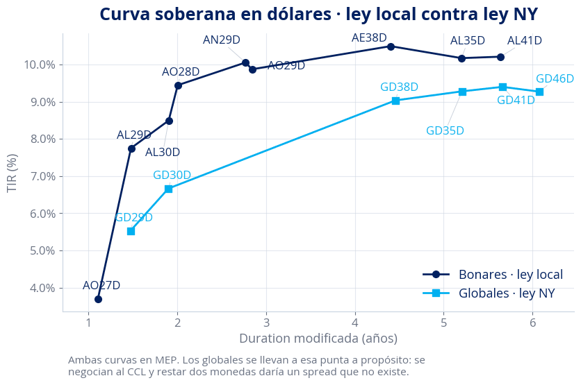
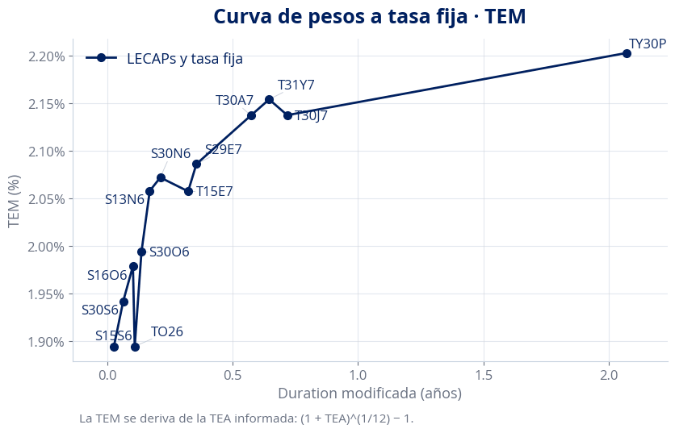
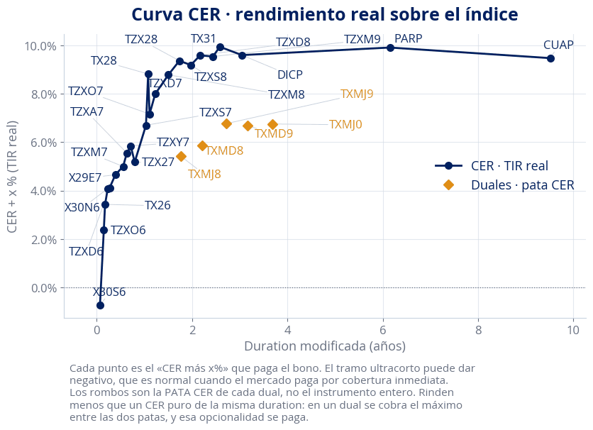
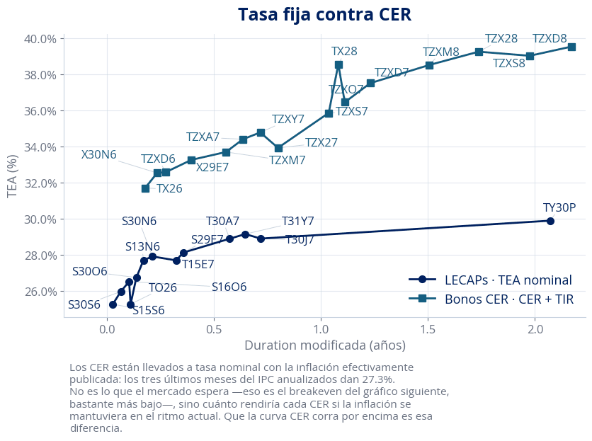
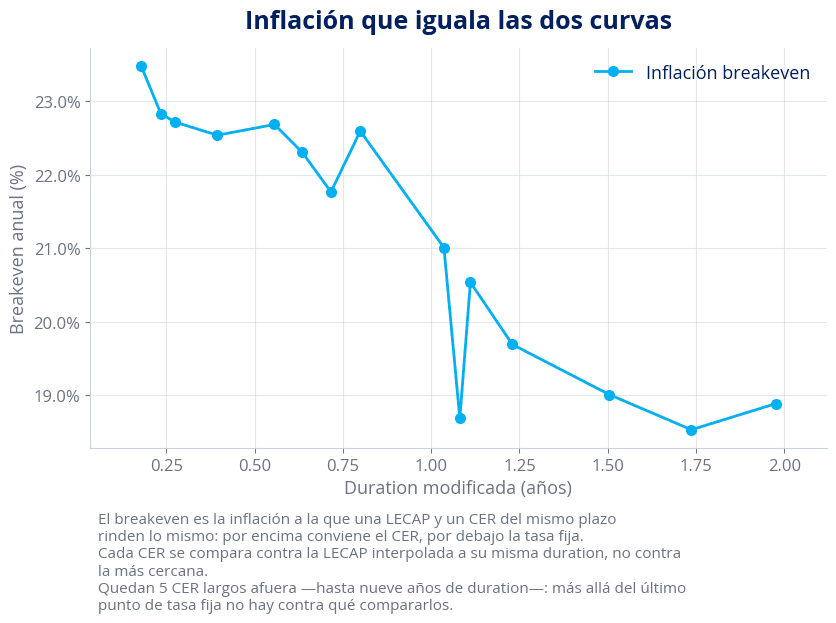
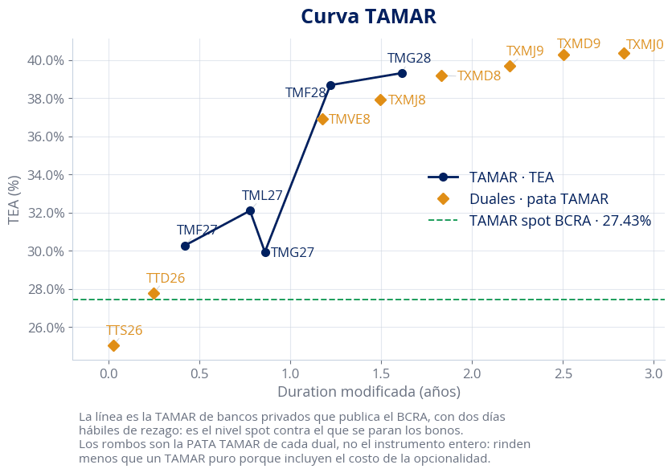
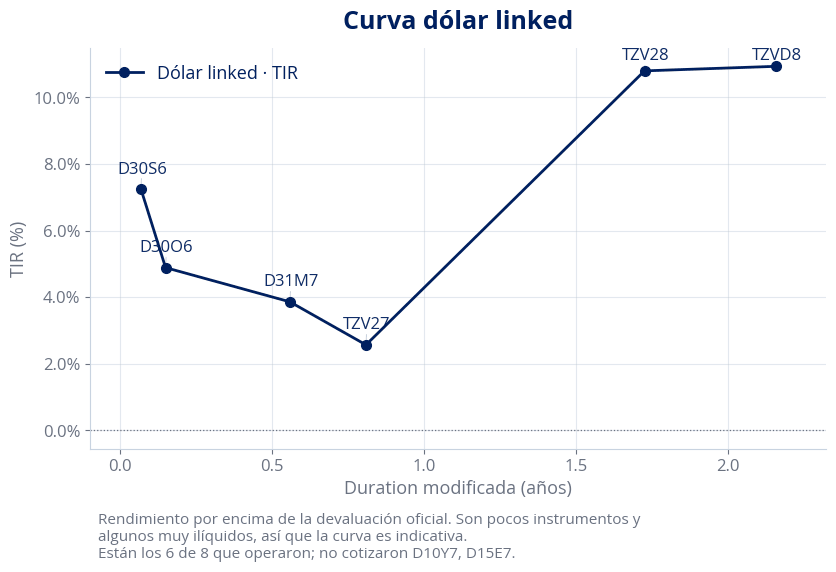
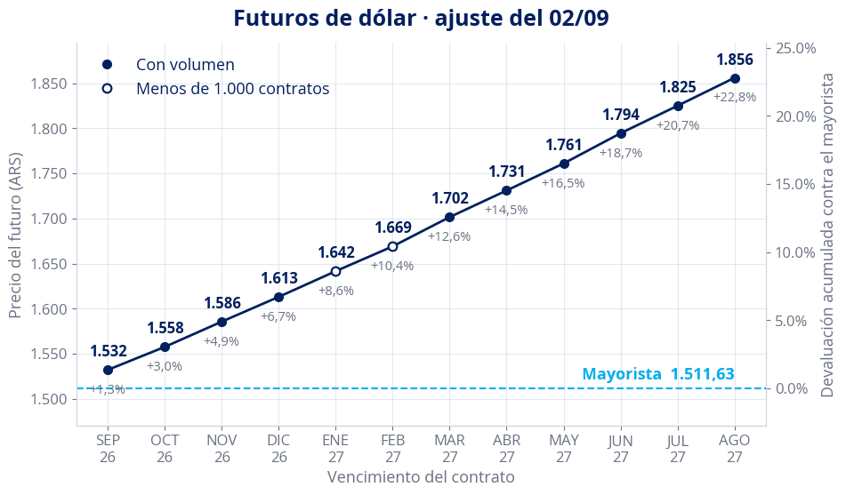
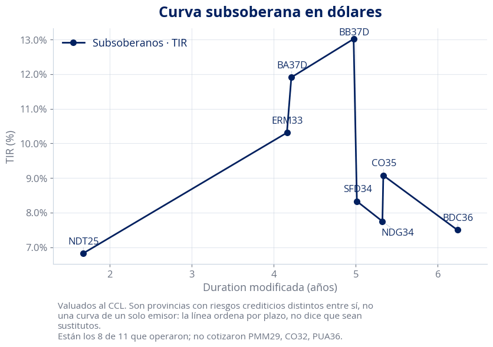

Globales vs Bonares
Curva en dólares por legislación, con las dos patas llevadas a la misma punta antes de restarlas, como hace la solapa Glob vs Bon. Mezclar MEP con CCL mueve el spread entre 79 y 279 puntos básicos según el par.

LECAPs en TEM
Tasa efectiva mensual de la curva de tasa fija en pesos.

Curva CER
Rendimiento real, CER más un spread. Cada dual entra con su pata CER, pedida a 1816 por separado y con su propia duration.

LECAPs contra CER
Las dos curvas sobre el tramo que comparten, cada una en su escala: la tasa fija a la izquierda y el rendimiento real de los CER a la derecha. En un solo eje los CER quedaban aplastados contra el piso.

Inflación implícita
La inflación a la que una LECAP y un CER del mismo plazo rinden lo mismo. Cada CER se compara contra la curva de tasa fija interpolada a su misma duration, no contra la LECAP más cercana.

Curva TAMAR
Incluye la pata TAMAR de los duales y la TAMAR spot de bancos privados que publica el BCRA.

Curva dólar linked
Devaluación implícita por vencimiento.

Futuros de dólar
Precio de cada contrato a la izquierda y, a la derecha, la devaluación acumulada que ese precio implica contra el mayorista. Es una sola curva leída en dos escalas: el porcentaje acumulado es una función lineal del precio, así que como segunda línea sería el mismo dato dibujado dos veces. Los círculos huecos son contratos de volumen fino, donde el ajuste lo pone la cámara y no el mercado.

Subsoberanos en CCL
Provinciales y municipales, valuados en la misma punta en que los muestra el monitor.
